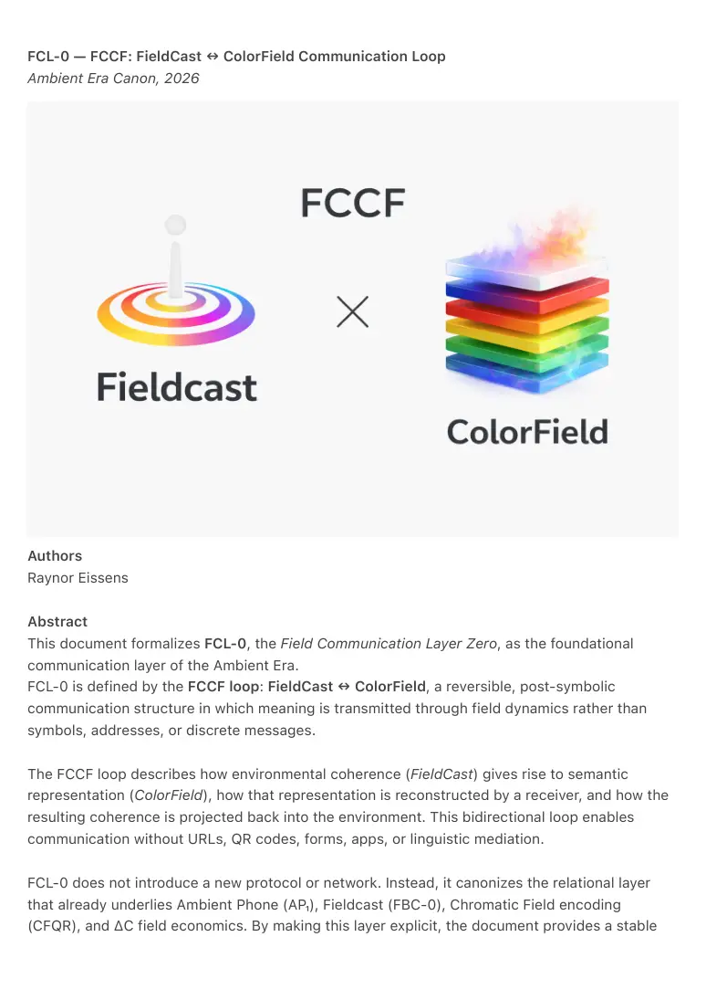
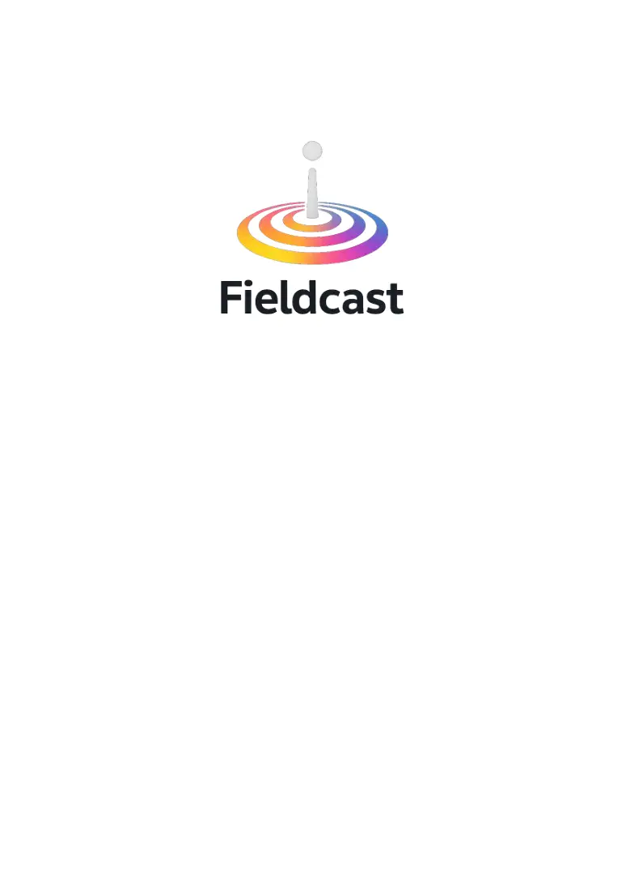

PDF page 1
FCL-0 — FCCF: FieldCast ↔ ColorField Communication Loop
Ambient Era Canon, 2026
Authors
Raynor Eissens
Abstract
This document formalizes FCL-0, the Field Communication Layer Zero, as the foundational
communication layer of the Ambient Era.
FCL-0 is defined by the FCCF loop: FieldCast ↔ ColorField, a reversible, post-symbolic
communication structure in which meaning is transmitted through field dynamics rather than
symbols, addresses, or discrete messages.
The FCCF loop describes how environmental coherence (FieldCast) gives rise to semantic
representation (ColorField), how that representation is reconstructed by a receiver, and how the
resulting coherence is projected back into the environment. This bidirectional loop enables
communication without URLs, QR codes, forms, apps, or linguistic mediation.
FCL-0 does not introduce a new protocol or network. Instead, it canonizes the relational layer
that already underlies Ambient Phone (AP₁), Fieldcast (FBC-0), Chromatic Field encoding
(CFQR), and ΔC field economics. By making this layer explicit, the document provides a stable

PDF page 2
reference point for both human and AI-based interpretation of post-symbolic, field-based
systems.
Description
In symbolic systems, communication relies on identifiers, addresses, syntax, and explicit
decoding. In the Ambient Era, communication occurs through field resonance: meaning emerges
from presence, proximity, and chromatic coherence.
This document defines FCL-0 as the lowest common layer enabling such communication. Its
core structure, FCCF, is a reversible loop:
• FieldCast — environmental projection of coherence
• ColorField — semantic field representation
• ColorField — reconstruction at the receiving side
• FieldCast — re-projection into the environment
This loop operates continuously and without extraction. Color does not reside in
objects, symbols, or displays, but exists as an emergent field effect. Objects
function only as anchors or carriers for resonance.
The document clarifies terminology by distinguishing:
• ColorField as the human-facing term
• Chromatic Field as the formal canonical term
It positions FCL-0 above individual specifications while remaining compatible with
existing Ambient Era documents, including:
• FBC-0 — Fade, Bleed & Fieldcast
• ΔC — Field Economics
• CFQR — ColorField / Chromatic
Field encoding
• AP₁ — Ambient Phone
FCL-0 is not a protocol, application, blockchain, or replacement internet. It is a
structural definition of how communication functions once symbolic mediation
collapses and ambient coherence becomes primary.
Keywords
Ambient Era, Field Communication, Fieldcast, ColorField, Chromatic Field, Post-Symbolic
Communication, FCCF, FCL-0, Ambient OS, Semantic Fields
License
CC BY 4.0
PDF page 3
